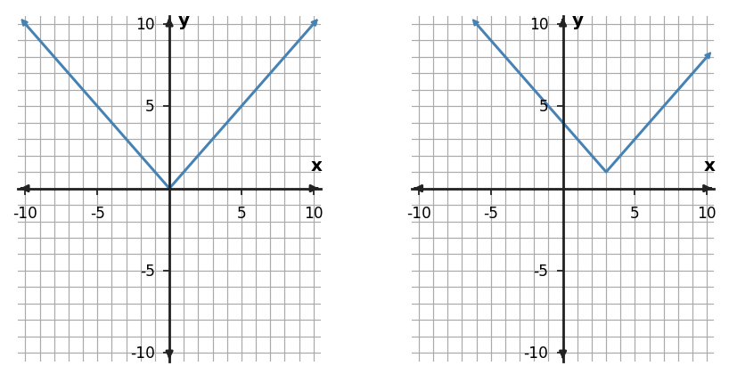

Algebra Practice 4.2 :::: Set 2
1. The left graph is a parent function and the right graph is a translation. Describe the horizontal and vertical shift, then write a matching translated equation.

2. A student says $y=(x+4)^2+3$ moves $y=x^2$ right 4 and up 3. Identify and correct the horizontal-shift error.
3. Start with $y=x$. Translate the graph 1 units right and 1 units up. Write an equation for the translated function.
4. Describe the translation from $y=x^2$ to $y=(x-1)^2+2$.
5. Translate $y=x^2$ 1 units left and 1 units up. Complete the translated coordinates for the three key points.
| Parent point | Translated point |
|---|---|
| (-1,1) | ? |
| (0,0) | ? |
| (1,1) | ? |
6. Translate $y=x^2$ 1 units right and 1 units up. Complete the translated coordinates for the three key points.
| Parent point | Translated point |
|---|---|
| (-1,1) | ? |
| (0,0) | ? |
| (1,1) | ? |
7. Use the parent and translated graphs to write an equation for the graph on the right and state the horizontal and vertical shifts.

8. Start with $y=|x|$. Translate the graph 4 units right and 2 units up. Write an equation for the translated function.
9. Describe the translation from $y=x^2$ to $y=(x+2)^2+2$.
10. The key points of $y=x^2$ are translated 1 unit left and 4 units up. Write an equation for the translated function and give the new vertex.
| parent point |
|---|
| (-1,1) |
| (0,0) |
| (1,1) |
11. Use the absolute-value graph pair to locate the parent vertex and translated vertex. Then write the translated equation and describe both shifts.

12. A student says $y=|x+1|-4$ translates the parent function right 1 and down 4. Identify the error and give the correct translation.
13. Predict how every key point of $y=x^2$ moves when the equation changes to a graph shifted 4 units right and 2 units down. State the new vertex and the image of $(1,1)$.
| parent point |
|---|
| (0,0) |
| (1,1) |
14. The left graph is a parent function and the right graph is a translation. Describe the horizontal and vertical shift, then write a matching translated equation.

15. Translate $y=x^2$ 4 units left and 2 units up. Complete the translated coordinates for the three key points.
| Parent point | Translated point |
|---|---|
| (-1,1) | ? |
| (0,0) | ? |
| (1,1) | ? |
16. Use the graph pair to predict the signs that must appear in the translated equation. Explain the horizontal-sign convention.

17. A student says $y=(x+5)^2-3$ translates the parent function right 5 and down 3. Identify the error and give the correct translation.
18. Start with $y=x$. Translate the graph 5 units left and 4 units down. Write an equation for the translated function.
19. Graph the solution to $y\ge x+2$ and describe which side of the boundary line is included.
20. Graph the solution to $y\ge 2x-2$ and describe which side of the boundary line is included.
21. Graph the solution to $y\ge 3x-1$ and describe which side of the boundary line is included.
22. Write the linear equation represented by the table. Identify the rate of change and starting value.
| x | y |
|---|---|
| 0 | -3 |
| 1 | -5.5 |
| 2 | -8 |
23. Write the linear equation represented by the table. Identify the rate of change and starting value.
| x | y |
|---|---|
| 0 | -1 |
| 1 | 1.5 |
| 2 | 4 |
24. Write the linear equation represented by the table. Identify the rate of change and starting value.
| x | y |
|---|---|
| 0 | 5 |
| 1 | 4.5 |
| 2 | 4 |